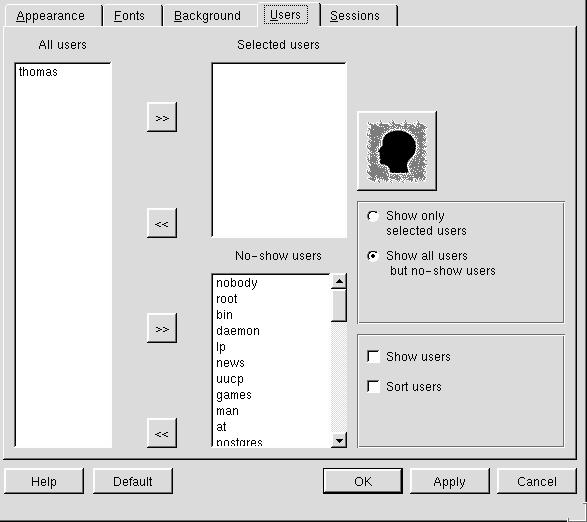

<!--startcut  ==============================================-->
<!-- *** BEGIN HTML header *** -->
<!DOCTYPE HTML PUBLIC "-//W3C//DTD HTML 3.2//EN">
<HTML><HEAD>
<title>The Weekend Mechanic LG #67</title>
</HEAD>
<BODY BGCOLOR="#FFFFFF" TEXT="#000000" LINK="#0000FF" VLINK="#0000AF"
ALINK="#FF0000">
<!-- *** END HTML header *** -->

<CENTER>
<A HREF="http://www.linuxgazette.net/">
</A> 
<BR>

<!-- *** BEGIN navbar *** -->
<A HREF="lg_tips67.html"></A><A HREF="index.html"></A><A HREF="../index.html"></A><A HREF="../faq/index.html"></A><A HREF="arndt.html"></A>
<!-- *** END navbar *** -->
<P>
</CENTER>

<!--endcut ============================================================-->

<H4 ALIGN="center">
"Linux Gazette...<I>making Linux just a little more <FONT COLOR="red">lovable!</FONT></I>"

</H4>

<P> <HR> <P> 
<!--===================================================================-->

<center>
<H1><font color="maroon">The Weekend Mechanic</font></H1>
<H4>By <a href="mailto:n6tadam@users.purbeck.dorset.sch.uk">Thomas Adam</a></H4>
</center>
<P> <HR> <P>  

<!-- END header -->


<!--Begin Article-->
<H2>Table of Contents</H2>
<UL>
  <LI><A HREF="#preamble">Welcome to the June edition</A>
  <LI><A HREF="#lwmmail">The LWM mailbox</A>
  <LI><A HREF="#xwinmonitor">Linux Installation: Xwindow and monitors</A>
  <LI><A HREF="#xwindowing">Setting up and Customising Xwindow</A>
  <LI><A HREF="#closingtime">Closing Time</A>
</UL>
<HR NOSHADE width=100%>
<!--=======================================================================================-->
<!-- ** begin preamble ** -->
<A NAME="preamble">
<H2>Welcome to the June edition</H2>

<P>Welcome back, this time to the June Edition of the <B>Linux Weekend
Mechanic</B>.How have you all been?? I have been incrediably busy. You would
not believe the amount of geology coursework that I have to do as part of my
course. I can tell you one thing though....I hope that I never have to write
about "the palaeographical environments that the wenlock limestone formed in,
with relation to the fossil corals", ever again!!</P>

<P>Anyhow, what have people been doing in Linux over the last four weeks?? I
have been quite busy at school updating my bashscript <I>loop4mail</I>, to do
with the squid filters on our two proxy servers. Also, the DLUG (Dorset Linux
Users Group) had a "Linux Install Day", helping people to install Linux on
their Desktop and Laptop computers!! Fifty people or so turned up for that,
which was a great success. Pictures of their install day can be found at <A
HREF="http://www.dorset.lug.org.uk">DLUG site</A></P>

<P>I must also apologise about the lack of "depth" with this
article. Things with school have been busier than I had expected!</P>

<P>Anyway, I think that I have rambled on long enough now. Enjoy........</P>

<HR NOSHADE width=100%> <!-- ** end preamble ** -->
<!--=======================================================================================-->
<!-- ** begin lwmmail ** --> <A NAME="lwmmail"> <H2>The LWM mailbox</H2>
<P>What follows, is any e-mails that I received, related to the previous

<B>Linux Weekend Mechanic</B>. See what you think.....</P>

<PRE>
From:    Thomas Nyman
To:      "Thomas Adam", &lt;n6tadam@users.purbeck.dorset.sch.uk&gt;
Sent:    Friday, May 04,2001 10:33 AM
Subject: Weekend mechanic

I like the "mechanic"
Two things that I would like to see explained are these.

1) If I install windows I may have a number of problems but never with my
monitor and graphical interface. Personally I have often experienced the
problem that I cannot get Xwindows to show on the screen monitor in a satisfactory
way, i.e its either way to big for my monitor or its way to small...I
have so far not found an easy to understand explanation on how to remedy such a
problem.

2) It would be "darn nifty" if you could put in a section on how to login via telnet
and run xwindows on another machine.

Anyway, thanks, and keep up the good work,

Thomas
</PRE>

<I>[Thanks for your e-mail Thomas. As you can see, I have written an article
about setting up monitors under Linux! &nbsp;&nbsp;&nbsp;&nbsp;&nbsp; -- Thomas
Adam (The Weekend Mechanic)]</I>

<HR NOSHADE WIDTH=25%>

<PRE>
From: nomi <sahmad6@gmu.edu>
To: "Thomas Adam", &lt;n6tadam@users.purbeck.dorset.sch.uk&gt;
Subject: Linux Weekend Mechanic
Date: 12 May 2001 16:05

Hi, I read your article on LinuxGazette.  Could you cover how to setup
X, mainly the XF86Config file(s)?  I'm a console guy and know what I
need to know there, but when it comes to X (and editing it's
settings)..I'm totally lost.  Thanks.

Syed N. Ahmad
</PRE>
<I>[Thank you for your e-mail, Syed. I have more or less done what you have
suggested, except I might have gone into too much detail in some parts of X
configuring and not in others....still, nevermind -- Thomas Adam (Linux Weekend
Mechanic)]</I>

<HR NOSHADE WIDTH=25% ALIGN="center">

<PRE>
From: Don Reid <donr@cvs.agilent.com>
To: &lt;n6tadam@users.purbeck.dorset.sch.uk&gt;
Subject: shell aliases
Date: 08 May 2001 21:21

Your article on "Customising the Shell Environment" has a lot
of good info for people new to the command line.

One point I would like to add is that you can get into a lot
of trouble by aliasing over existing commands (rather than making
up new names).  If you run a script that uses one of these commands,
your changes may alter the way it works.

My preference is to retrain my fingers to type a new command.

There are ways to restrict aliases to interactive shells, but
those don't work for sources scripts.


--
Don Reid
</PRE>
<I>[Don raises a very good point here, and one which I neglected to mention in
my article. I shall just re-inforce that point by saying that, you should
<B>never ever</B> have alias titles as commands, because if a program calls a
bash builtin command, strange things can happen. Thanks for that Don. A valid
point. -- Thomas Adam (Linux Weekend Mechanic)]</I>

<HR WIDTH=25% ALIGN="center">

<PRE>
From: root <ssfb@myrealbox.com>
To: &lt;n6tadam@users.purbeck.dorset.sch.uk&gt;
Subject: thank for the bash tip
Date: 10 May 2001 13:24

I tried the tip about the shortcut in .bashrc. At first it did not work;
meaning: I was recieving the no command found ect... So after a reboot,
it work perfectly and made some other shortcuts that worked at the first
time or trial.

I wonder what will be next? and I waiting to see it.

Thank you for your time

Sylvain.
</PRE>
<I>[Umm, that is a strange problem, Sylvain, as to why you had to reboot your
machine for those changes to take effect. By Sourcing the file, bash should
have picked up those changes immediately. Still I am glad that it all works ok
now. Best of luck -- Thomas Adam (Linux Weekend Mechanic)]</I>

<HR NOSHADE WIDTH=25% ALIGN="center">
<PRE>
From: Paul Rowland <paul_row@bellsouth.net>
To: &lt;n6tadam@users.purbeck.dorset.sch.uk&gt;
Subject: weekend mech
Date: 02 May 2001 12:48

Dude,

Your comments are totally in geekdom. You rule!

Paul
</PRE>
<I>[Hello Paul, thank you for the vote of confidence. I am glad that you liked
the article!! I also like the use of your language "geekdom". I have never
heard that expression until now!! Regards -- Thomas Adam (Linux Weekend
Mechanic)]</I>

<HR NOSHADE WIDTH=25% ALIGN="center">
<PRE>
From: Josef Moffett <josef.moffett@mauripharm.com>
To: &lt;n6tadam@users.purbeck.dorset.sch.uk&gt;
Subject: Your Cron bits and bobs
Date: 08 May 2001 6:17

Hi there Thomas,

I've been using Linux now for about 3 years, and recently (about a year ago
now - time really flys when you're  having fun ;-) installed debian on an
old 486 at home to give me a masq box and firewall for my small home
network.

All my machines run linux at some point, but generally (mainly because I am
a flightsim maniac - fly II is out now, woo hoo) still am tied to windows. I
am dying for flight gear to come out a bit more stable so I can run it on
Linux!

Anyway, back the email (sorry about the ramble). I've been looking for more
info about Cron for ages now. I use the linux box as a local mailserver and
newserver (using leafnode). The pop3 server seems to work on its own -
although I do have a few quirks. Of course for this, I've got to get it
dialing in every now and then.

So far what I've done is to hijack (quite blatantly) the standard once a day
cron script (by the name, strangly enough of "standard" ;-) and tell it to
dialup using pon with a provider script with a very short timeout (30 secs).
In my ip-up script i then add fetchmail and fetchnews.

It works, but of course doesn't do it more than once a day, and reading
through man cron.d and the like, didn't really get me much further. I've
always got some wierd error. (I can't remember what it was, I think about
permissions - despite using it as root, but not serious).

Added to that, is the fact that it works (just less often than I'd like) and
the addage does say, "if it ain't broke...". Anyway, your article looks like
just the thing to get me to sort this out more professionally.

And then, perhaps I'd need to find a way to increase the "quiet hours" at
home so that I can find the time to work on the linux box (or anything else
in the computers!) without my 19month son helping my efforts by banging away
at the keys!

Cheers, and thanks again

JOE
</PRE>
<I>[Hi Joe, You sent me this nice long e-mail, which is really quite
interesting. I am also glad that you are going to find cron of some use, and
thus my article. Perhaps, you could insert a crontab entry which shutdown your
machine, before your 19 year old son gets to your computer!!!! Keep in touch --
Thomas Adam (Linux Weekend Mechanic)</I>

<HR NOSHADE width=100%>
<!-- ** end lwmmail ** -->
<!--=======================================================================================-->
<!-- ** begin xmonitor ** -->
<A NAME="xwinmonitor">

<H2>Linux Installation: Xwindow and monitors</H2>

<P>Thomas Nyman in his e-mail (see above), raised a good point about how
installing your monitor does not always work, when using Xwindow. Indeed, I had
not really given it much thought, as I had always fixed it, without really
thinking what I was doing.</P>

<P>When I first installed Linux (all those years
ago), I immediately booted into AnotherLevel (FVWM2), and realised that my
screen resolution was set at 640x480, and that everytime I tried to open a
window, I could not see enough of it to click to change any of the settings.
What was going on??? I was sure that I had told it to use 800x600 screen
resolution!! If you find that you have a similar problem, then I have a very
quick fix.....</P>

<P>1. Change to a spare terminal, by pressing
&lt;Ctrl&gt;&lt;Alt&gt;&lt;Fx&gt; ("Fx" being a function key). Now log in as
root</P>

<P>2. Edit the file "/etc/XF86Config" using your favourite text
editor.</P>
<P>3. Because XF86Config varies with different Linux distributions,
I cannot say specifically where the section is, but you want to find the
section labelled <B>Screen</B> which should look something like this....</P>

<PRE>
Section "Screen"
Driver  	"SVGA"
SubSection "Display"
Depth  	8
Modes  	"800x600"  "640x480"
EndSubSection

SubSection "Display"
Depth  	16
Modes  	"800x600"  "640x480"
  EndSubSection
  SubSection "Display"
    Depth  	24
    Modes  	"800x600"  "640x480"
  EndSubSection
  SubSection "Display"
    Depth  	32
    Modes  	"800x600"  "640x480"
  EndSubSection
  Monitor  	"Primary-Monitor"
  Device  	"Primary-Card"
  DefaultColorDepth  	8
EndSection
</PRE>

<P>4. Now what you have to do, is to change the resolution for each colour
depth that you will be using. To do this, you must edit the values next to
"Modes". The syntax for this, is that the first value you come to is the one
that is activated first, and then the second is a backup if the first value
failed and so on.</P>

<P>To tell X that you want to use a certain colour depth, you must also edit
the value next to "DefaultColorDepth" to be whatever depth that you want.
Note: that you can only specify one default colour depth!!</P>

<P>So, if you will be running in 16bit mode with 800x600 display, then you
would set the following, making sure that you specify the next resolution as a
backup.

<PRE> Modes  	"800x600"  "640x480"</PRE>

<P>And then, if you have not done so already, change the value of
"DefaultColorDepth" to be <B>16</B></P>

<P>And that is all there is to it. Save the file and then boot up your X
display.</P>

<P>I know that there are programs which can do this editing for you such as
"Xconfigurator", but I find that editing the file myself is much quicker!!</P>

<HR NOSHADE width=100%>
<!-- ** end xmonitor ** -->
<!--=======================================================================================-->
<!-- ** begin xwindowing ** -->
<A NAME="xwindowing">
<H2>Setting up and customising Xwindow</H2>

<P>This article may be of some use to those people who prefer the command line,
but would like to use X, but don't know how to go about it.It may also be of
use to those who are interested in getting X to work in a satisfactory
manor. Now, I believe that this topic has been covered before in an early
issue of the <B>Linux Gazette</B>, but as I was asked directly, I thought I
would write the article anyway!!</P>

<P>Firstly, you must decide how you are going to run your X display. There are
two ways of doing this, either by entering a different run-level, which will in
turn run an X login client such as <B>XDM</B>, <B>GDM</B>, or <B>KDM</B>, or by
typing in the command <I>startx &</I> at the console, after you have logged
in.</P>

<P>The advantages of using the first method is that if you know that
you will nearly always be using Xwindows then you won't have to worry about
starting it yourself.</P>

<P><B>KDM</B> has a nice feature that allows you to select a different Window
Manager before you logon, which I have found quite useful. The configuration
for this can be done from <B>KDE</B> itself, using the program "kcontrol". By
clicking "Applications --&gt; login". A screenshot of how to configure <B>KDM</B>
can be seen below.</P>


<P>The other alternative that I mentioned was to use <B>XDM</B>. This is the
login client that I use, as it is simple!! This one takes a little more
configuration that <B>KDM</B> but it is the one that I like to use.</P>

<H2 ALIGN="left">The files</H2>

<P>Here are a list of files that we shall be using, and they are all found in
the directory: "/etc/X11/xdm". The files we shall be concentrating on, are the
following:</P>

<B>/etc/X11/xdm/Xresources</B><BR>
<B>/etc/X11/xdm/Xservers</B><BR>
<B>/etc/X11/xdm/xdm-config</B><BR>
<B>/etc/X11/xdm/window-managers</B><BR>

<H2 ALIGN="left">Customisation</H2>

<P>I shall take each file in turn, explain that files role, and tell you the
best way to customise it....</P>

<B>Xresources</B>

<P>This file allows you to customise the look and feel of the main login
window. You can also set and disable certain keystrokes. This file is
probably the most important to customise.</P>

<P>While it may not be necessary for you to customise this file, I shall point
out things that you can do, if you feel the need. I shall not be covering
this file line by line, but most of the information in this file is quite
self explanitory.</P>

<P>1. To change the text at the top of the login box, edit the value thus:</P>
<PRE>xlogin*greeting:	Welcome to this console</PRE>
<P>I have changed the "Welcome to this console" to <B>"Welcome to
CLIENTHOST"</B>. This is so that I know, on my home network, which terminal I
am using. The "CLIENTHOST" is actually a variable, which holds the first part
of your hostname. Thus, in my case it is <I>Grangedairy</I>, but if you have
not changed your hostname since you installed Linux, then most likely,
"CLIENTHOST" will return <I>LocalHost</I></P>

<P>Just as an aside, if you do want to change your hostname, edit the
values stored in the "/etc/hostname", and in a file "/etc/sysconfig/network",
if the latter exists. Note, for the changes to take effect, you will have to
switch to run-level 6 (init 6)</P>

<P>2. You can also change the colour of this greeting, to be whatever you like.
Find the following:</P>

<PRE>xlogin*greetColor:		CadetBlue</PRE>

<P>I have changed the "CadetBlue" value to something a little more
vitalising....guess what it is?? No? It's "Yellow", and rather surprisingly, it
looks good too.</P>

<P>3. You can also change the width of various frames of the login window
too:</P>

<PRE>
xlogin*borderWidth:		2
xlogin*frameWidth:		0
xlogin*innerFramesWidth:	1
</PRE>

<P>The first , sets the overall border commandwidth of the login
screen. Experiment to see what a value looks like. I find that 2 looks ok, on
both my desktop and laptop machines.</P>

<P>The second command, sets the frame width of the border. I tend to leave it
at 0</P>

<P>The third command, set the inner frame width for each of the input fields in
the main login window, namely "Login" and "Password". When I edited this value,
I hated the outcome, as each of the boxes looked "embossed".</P>

<P>You can set things like the background colour of the main screen, and change
the colour of the error message "Login Incorrect":</P>

<PRE>
xlogin*failColor:		red
*Foreground:			black
*Background:			#c0c0c0
</PRE>

<P>Thus, the first command is very self explanitory. It should also be said,
that when changing values of this type, one can either specify the name of the
file, or put the #RRGGBB format aswell.</P>

<P>The second and third commands, sets the foreground colour and background
colour respectively.</P>

<P>Thats it for this file. I am sorry if all of this seems rushed, but the
majority of the file is fairly straightforward. I just thought that I would
highlight some points of interest.</P>

<HR NOSHADE WITDTH=25% ALIGN="center">

<H2 ALIGN="left">Xservers</H2>

<P>There really isn't much to say about this file, other than this file allows
you to change virtual consoles. Although I would only advise changing these
settings if you know that the VT you are changing to does not have mingetty
running on it. I have had some interesting problems with this before!! If
you are uncertain, consult the settings in "/etc/inittab"</P>

<PRE>:0 local /usr/X11R6/bin/X :0 vt07</PRE>

<P>So, to customise this value, change the number(s) after "vt", to start X on
the virtual terminal of your choice. It is also worth noting that you can
also specify the colour depth to use, if you are using one other than that
set in the "/etc/XF86Config" file. To do this, append the following after
the "vt07" bit to look like this....</P>

<PRE>:0 local /usr/X11R6/bin/X :0 vt07 -bpp 16</PRE>

<BLOCKQUOTE><EM>
	[I have xdm running two xservers, one on vt9 and the other on vt10.
	The first one is mine.  I chose vt9 because F9 the first key in the
	third group of function keys.  vt10 is for my roomates, so they can do
	their thang without disturbing my idle session.  My
	/etc/X11/xdm/Xservers (on Debian) looks like this:
</EM><PRE>
:0 local /usr/bin/X11/X :0 vt9  -bpp 24 -deferglyphs 16 dpms
:1 local /usr/bin/X11/X :1 vt10 -bpp 24 -deferglyphs 16 dpms                    
</PRE><EM>
-Mike.]
	</EM></BLOCKQUOTE>

<HR NOSHADE WIDTH=25% ALIGN="center">

<H2 ALIGN="left">xdm-config</H2>

<P>This file sets the various configurations of XDM, by invoking various files.
I have never had to customise this file, so I doubt if you will either!!</P>

<HR NOSHADE WITDTH=25% ALIGN="center">

<H2 ALIGN="left">window-managers</H2>

<P>This file holds a list of window managers that X will use. Note that you can
specify as many as you like, one after the other, line-by-line, but only the
top one will get executed. And, if it cannot find it, then it executes the
second one down, and so on. Thus my configuration is thus:</P>

<PRE>

/usr/bin/X11/AnotherLevel
/usr/bin/X11/twm
#file below symlinked from "/usr/openwin/bin/openwin"
/usr/bin/X11/openwin
</PRE>

<HR NOSHADE width=100%>
<!-- ** end xwindowing ** -->
<!--=======================================================================================-->
<!-- ** begin closingtime ** -->
<A NAME="closingtime">
<H2>Closing Time</H2>
<P>Well kind people, that concludes this months <B>Linux Weekend Mechanic</B>.
Thanks once again to everyone who took the time to send me an e-mail, praising
me, pointing out my areas of weakness, and giving article ideas. I am
currently working through all your article suggestions, so please bear with me.
Any more input that people can provide, is always welcome!! Keep those e-mails
flooding in please!!</P>

<P>Anyway, I must be going. I have still got to work on my chemistry (revising
the reaction conditions necessary to reduce a carboxylic acid to an alcohol
using Lithiumaluminiumhydride, I think). I have then got to go and teach piano,
and do some much needed Geography work. It is all go!!</P>

<P>In the meantime (and as like last weeks' ending)<B>Happy
Linuxing....</B></P>
<!-- ** end closingtime ** -->
<!--=======================================================================================-->
<HR NOSHADE WIDTH=100%>
<!-- ** Begin table comments, etc. Oh wakey wakey you idiot Thomas ** -->
<TABLE BORDER=0 ALIGN="center" WIDTH=60%>
<TH></TH>
<TH></TH>
<TH></TH>
<TR>
<TD WIDTH=10%></TD>
<TD WIDTH=80% ALIGN="center"><FONT COLOR="red" SIZE="5">Send Your Comments</FONT></TD>
<TD WIDTH=10%></TD>
</TR>
</TABLE>

<P ALIGN="center"><FONT SIZE="4">Any comments, suggestions, ideas, etc can be
mailed to me by clicking the e-mail address link below:</FONT><BR>
<A
HREF="mailto:n6tadam@users.purbeck.dorset.sch.uk">&lt;n6tadam@users.purbeck.dor
set.sch.uk&gt;</A></FONT></P>


<!-- *** BEGIN bio *** -->
<SPACER TYPE="vertical" SIZE="30">
<P> 
<H4>Thomas Adam</H4>
<CITE>My name is Thomas Adam. I am 18, and am currently studying for A-Levels
(=university entrance exam). I live
on a small farm, in the county of Dorset in England. I am a massive Linux
enthusiast, and help with linux proxy issues while I am at school. I have been
using Linux now for about six years. When not using Linux, I play the piano,
and enjoy walking and cycling.</CITE>


<!-- *** END bio *** -->

<!-- *** BEGIN copyright *** -->
<P> <hr> <!-- P --> 
<H5 ALIGN=center>

Copyright &copy; 2001, Thomas Adam.<BR>
Copying license <A HREF="../copying.html">http://www.linuxgazette.net/copying.html</A><BR> 
Published in Issue 67 of <i>Linux Gazette</i>, June 2001</H5>
<!-- *** END copyright *** -->

<!--startcut ==========================================================-->
<HR><P>
<CENTER>
<!-- *** BEGIN navbar *** -->
<A HREF="lg_tips67.html"></A><A HREF="index.html"></A><A HREF="../index.html"></A><A HREF="../faq/index.html"></A><A HREF="arndt.html"></A>
<!-- *** END navbar *** -->
</CENTER>
</BODY></HTML>
<!--endcut ============================================================-->
